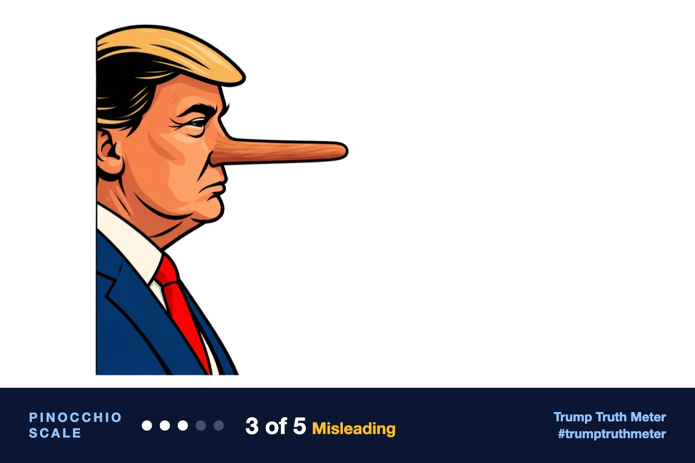

@realDonaldTrump · Oct 12, 2026, 7:23 AM ET · view on Truth Social
RT: https://truthsocial.com/users/realDonaldTrump/statuses/117427680732518150
[Quoting @realDonaldTrump]
RT: https://truthsocial.com/users/realDonaldTrump/statuses/117427680732518150
[Quoting @realDonaldTrump]

Trump did speak in Tennessee and was filmed dancing as he left the stage, but the speech was not two hours and he is not giving multi-hour speeches nearly every day across dozens of states. The line about Democrats is opinion.
Editor’s note: All four reviewers agreed this is a repost of Nick Sortor's words, not Trump's own writing, and that the Democrats line is opinion. They split on the facts: ChatGPT and Claude left the Tennessee event unverified and did not search; Gemini treated the schedule claim as mere hyperbole/opinion. Grok checked and found a real Tennessee appearance with a dance exit, a speech shorter than two hours, and a false 'every day / dozens of states' claim. I followed that evidence, with the speech-length claim rated misleading rather than false because it is an upward rounding of a long speech, not an invention.
Someone else’s words (96% confident)
Trump's account re-shared Nick Sortor's words as an image; the text is not written by Trump.